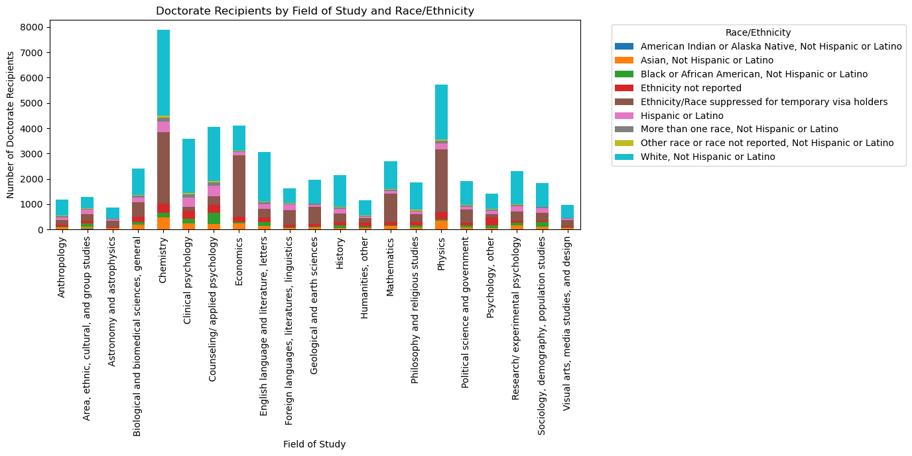

import altair as altimport geopandas as gpdimport hvplot.pandasimport numpy as npimport pandas as pdimport seaborn as snsfrom matplotlib import pyplot as pltimport requestsimport foliumimport numpy as np
Intel MKL WARNING: Support of Intel(R) Streaming SIMD Extensions 4.2 (Intel(R) SSE4.2) enabled only processors has been deprecated. Intel oneAPI Math Kernel Library 2025.0 will require Intel(R) Advanced Vector Extensions (Intel(R) AVX) instructions.
Intel MKL WARNING: Support of Intel(R) Streaming SIMD Extensions 4.2 (Intel(R) SSE4.2) enabled only processors has been deprecated. Intel oneAPI Math Kernel Library 2025.0 will require Intel(R) Advanced Vector Extensions (Intel(R) AVX) instructions.
import pandas as pdfile_path ="/Users/dennisespejo/Desktop/ncses_table_raw_data_SED_2025-02-07T17_04_09Z.csv"df = pd.read_csv(file_path)#aggregated_data = df.groupby(["Major Fields (SED-CIP)", "Race and Ethnicity"])["Doctorate Recipients by Demographics"].sum().unstack(fill_value=0)
aggregated_data
Race and Ethnicity
American Indian or Alaska Native, Not Hispanic or Latino
Asian, Not Hispanic or Latino
Black or African American, Not Hispanic or Latino
Ethnicity not reported
Ethnicity/Race suppressed for temporary visa holders
Hispanic or Latino
More than one race, Not Hispanic or Latino
Other race or race not reported, Not Hispanic or Latino
White, Not Hispanic or Latino
Major Fields (SED-CIP)
Anthropology
10
72
30
66
200
107
49
22
619
Area, ethnic, cultural, and group studies
20
83
148
85
265
177
41
14
444
Astronomy and astrophysics
2
44
18
29
250
58
24
6
444
Biological and biomedical sciences, general
2
184
101
215
585
179
71
24
1051
Chemistry
11
467
168
374
2817
427
165
63
3387
Clinical psychology
12
232
189
316
134
379
131
40
2143
Counseling/ applied psychology
11
214
441
306
335
414
132
54
2139
Economics
0
243
58
197
2444
116
36
24
981
English language and literature, letters
11
120
153
189
336
178
91
33
1939
Foreign languages, literatures, linguistics
4
51
31
114
558
250
29
9
568
Geological and earth sciences
3
71
31
98
690
90
40
6
924
History
3
65
104
124
344
173
55
20
1260
Humanities, other
0
60
63
142
188
59
19
17
613
Mathematics
1
145
16
142
1101
106
70
26
1075
Philosophy and religious studies
2
78
73
127
316
112
40
37
1075
Physics
3
336
54
288
2489
233
102
41
2175
Political science and government
1
89
70
115
522
108
37
23
957
Psychology, other
3
53
110
314
136
130
49
18
609
Research/ experimental psychology
5
168
93
80
368
196
74
25
1297
Sociology, demography, population studies
2
105
176
64
317
181
45
11
928
Visual arts, media studies, and design
4
65
21
55
219
61
20
12
506
pip install squarify
Requirement already satisfied: squarify in /Users/dennisespejo/mambaforge/envs/musa-550-fall-2024/lib/python3.10/site-packages (0.4.4)
Note: you may need to restart the kernel to use updated packages.
import matplotlib.pyplot as pltimport seaborn as snsplt.figure(figsize=(12, 8))aggregated_data.plot(kind="bar", stacked=True, colormap="tab10", figsize=(14, 7))plt.xlabel("Field of Study")plt.ylabel("Number of Doctorate Recipients")plt.title("Doctorate Recipients by Field of Study and Race/Ethnicity")plt.legend(title="Race/Ethnicity", bbox_to_anchor=(1.05, 1), loc='upper left')plt.xticks(rotation=90)plt.tight_layout()plt.show()
<Figure size 1200x800 with 0 Axes>

import pandas as pdimport plotly.express as pximport ipywidgets as widgetsfrom IPython.display import displaydf = pd.read_csv(file_path)aggregated_data = df.groupby(["Major Fields (SED-CIP)", "Race and Ethnicity"])["Doctorate Recipients by Demographics"].sum().unstack(fill_value=0)field_dropdown = widgets.Dropdown( options=aggregated_data.index, description="Field of Study:", style={'description_width': 'initial'})def update_chart(field): field_data = aggregated_data.loc[field] fig = px.bar( y=field_data.index, x=field_data.values, labels={'y': 'Race/Ethnicity', 'x': 'Number of Doctorate Recipients'}, title=f"Racial Makeup of Doctorate Recipients in {field}", text_auto=True, color=field_data.index ) fig.show()widgets.interactive(update_chart, field=field_dropdown)
import pandas as pdimport plotly.express as pximport ipywidgets as widgetsfrom IPython.display import display# Load Datadf = pd.read_csv(file_path)# Aggregate Dataaggregated_data = df.groupby(["Major Fields (SED-CIP)", "Race and Ethnicity"])["Doctorate Recipients by Demographics"].sum().unstack(fill_value=0)# Dropdown Widgetfield_dropdown = widgets.Dropdown( options=aggregated_data.index, description="Select Field:", style={'description_width': 'initial'}, layout=widgets.Layout(width='50%'))# Function to Update Chartdef update_chart(field): field_data = aggregated_data.loc[field].sort_values(ascending=True) # Sort for better visualization fig = px.bar( y=field_data.index, x=field_data.values, orientation="h", labels={'y': 'Race/Ethnicity', 'x': 'Doctorate Recipients'}, title=f"📊 Racial Makeup of Doctorate Recipients in {field}", text_auto=True, color=field_data.index, color_discrete_sequence=px.colors.qualitative.Set2, ) fig.update_layout( font=dict(size=14), margin=dict(l=100, r=20, t=60, b=40), height=500 ) fig.show()# Display Interactive Widgetdashboard = widgets.VBox([field_dropdown, widgets.interactive_output(update_chart, {'field': field_dropdown})])display(dashboard)
df2=pd.read_csv("/Users/dennisespejo/Desktop/ncses_table_raw_data_SED_2025-02-07T17_44_33Z.csv")ivy_plus_schools = ["Brown U.", "Chicago U", "Columbia U. in the City of New York", "Cornell U.","Dartmouth C.", "Duke U.", "Harvard U.", "Massachusetts Institute of Technology", "U. Pennsylvania", "Princeton U.", "Stanford U.", "Yale U."]df2["Institution Category"] = df2["Institution Name"].apply(lambda x: "Ivy Plus"if x in ivy_plus_schools else"Non-Ivy Plus")
df2
Year
Institution Name
Major Fields (SED-CIP)
Doctorate Recipients by Institution
Institution Category
0
2023
Adelphi U.
Clinical psychology
20
Non-Ivy Plus
1
2023
Air Force Institute of Technology
Physics
4
Non-Ivy Plus
2
2023
Alabama A&M U.
Physics
2
Non-Ivy Plus
3
2023
Albany Medical C.
Biological and biomedical sciences, general
1
Non-Ivy Plus
4
2023
Albert Einstein C. Medicine
Biological and biomedical sciences, general
6
Non-Ivy Plus
...
...
...
...
...
...
9348
2021
Yale U.
Visual arts, media studies, and design
5
Ivy Plus
9349
2021
Yale U.
Biological and biomedical sciences, other
1
Ivy Plus
9350
2021
Yeshiva U.
Clinical psychology
7
Non-Ivy Plus
9351
2021
Yeshiva U.
Counseling/ applied psychology
3
Non-Ivy Plus
9352
2021
Yeshiva U.
Philosophy and religious studies
3
Non-Ivy Plus
9353 rows × 5 columns
aggregated_data2 = df2.groupby(["Major Fields (SED-CIP)", "Institution Category"])["Doctorate Recipients by Institution"].sum().unstack(fill_value=0)